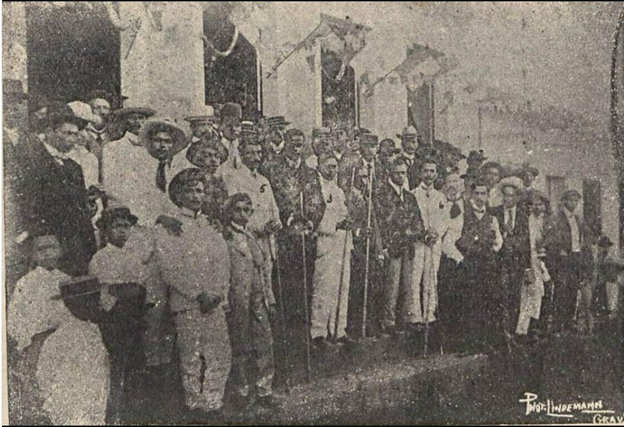
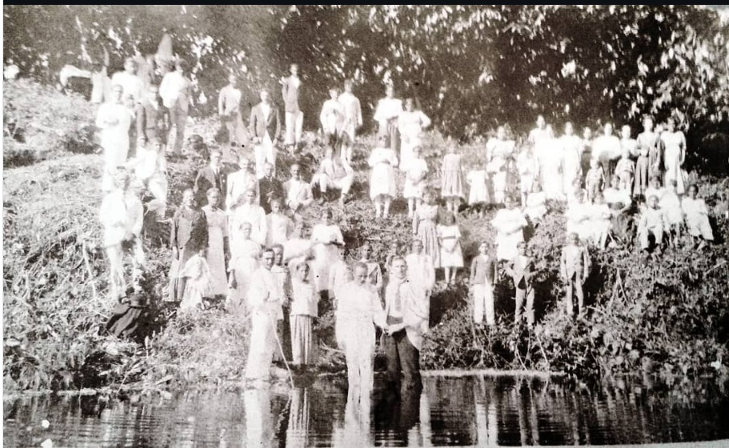
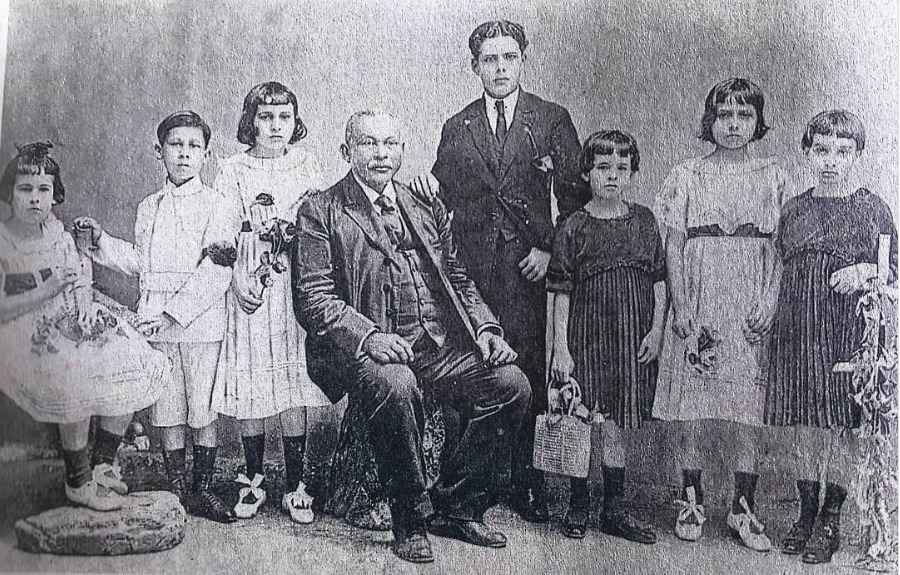
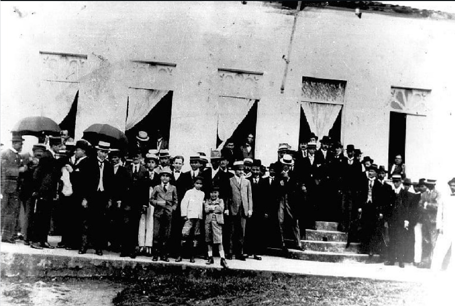
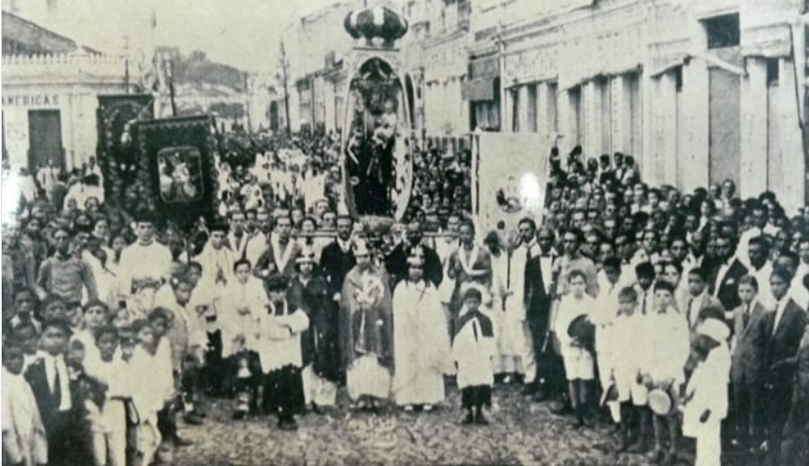
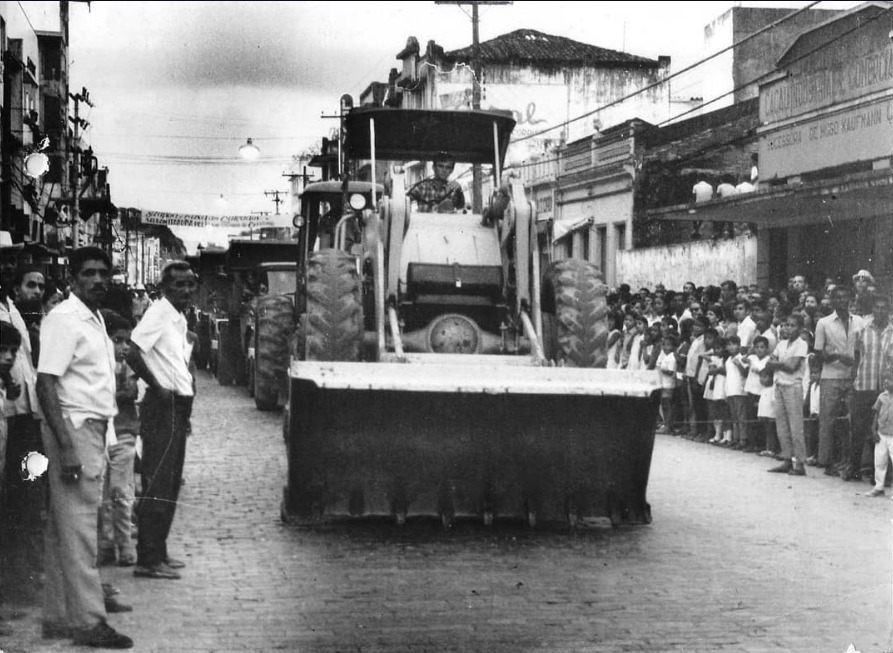
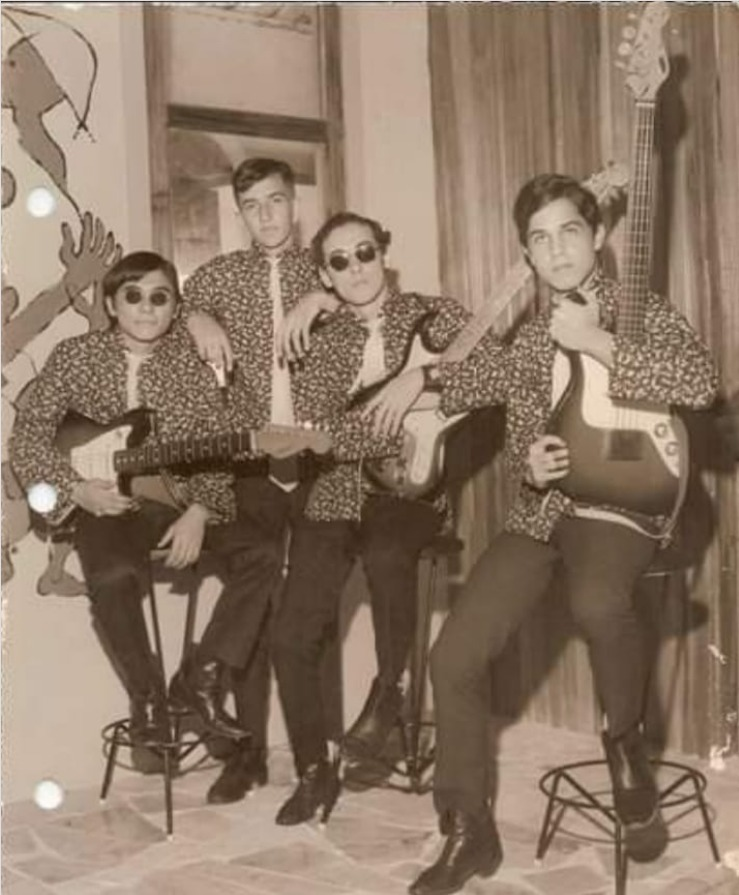
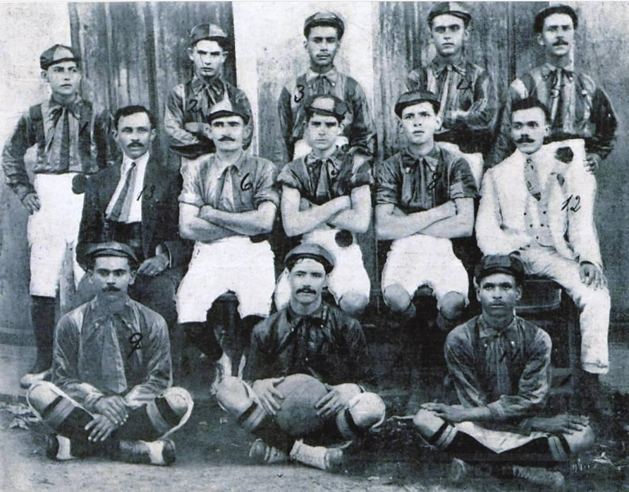

Memórias Grapiúnas
Registros visuais que preservam a identidade e a evolução de Itabuna.

Bilhar Itabunense (1908)
Torneio de bilhar realizado em 25/12/1908 na vila de Itabuna (a emancipação somente foi efetivada em 28/7/1910) no "Bilhar Itabunense" de propriedade do sr. João Constantino Faskomy. Naquela época, o bilhar era um símbolo máximo de "civilidade" e status social. As mesas eram importadas e as bolas costumavam ser de marfim ou resinas primitivas. Esse torneio de Natal servia para demonstrar que, mesmo sendo uma vila jovem no meio da mata, Itabuna já possuía hábitos urbanos sofisticados.
Fonte: "Revista do Brasil".

Batismo coletivo (1918)
Batismo coletivo da Igreja Adventista, em 1918, às margens do rio Boqueirão (Rio do Braço), região do Boqueirão, Itabuna (BA). O local era escolhido pela pureza das águas antes da urbanização intensa. O nome "Boqueirão" referia-se a uma curva profunda do rio. Naquele tempo, o Rio Cachoeira era o "coração" da cidade: servia para transporte de cacau em canoas, como fonte de água potável e para as famosas lavadeiras que passavam o dia cantando em suas margens.

Firmino Alves (1918)
O fundador de Itabuna cercado pelos seus netos em registro histórico. Firmino Alves era conhecido por sua visão visionária; ele previu que o povoado de Tabocas cresceria tanto que precisaria ser desmembrado de Ilhéus. Ele foi o responsável por atrair as primeiras famílias de Sergipe (como os "sergipanos" de Estância) que formaram a base da população local. A presença dos netos na foto reforça a ideia de "linhagem grapiúna".

José Kruschewsky (1920)
Posse do intendente em um período de grande desenvolvimento local. José Kruschewsky pertencia a uma das famílias mais influentes do ciclo do cacau. Sua gestão focou em "sanear" a cidade, combatendo epidemias e organizando o traçado das ruas. Foi nessa época que Itabuna começou a ganhar ares de cidade moderna, com a instalação dos primeiros postes de iluminação pública e a organização dos cemitérios monumentais.

Procissão de São José (1927)
Manifestação de fé ao padroeiro da cidade em registro tradicional. O nome "São José" foi escolhido para o padroeiro devido à forte tradição cristã dos fundadores. Curiosamente, a procissão era o evento onde a divisão social ficava mais clara: a elite ocupava as primeiras filas com suas melhores roupas ("ternos de linho"), enquanto o povo do interior e os trabalhadores do cacau seguiam logo atrás, criando um mar de gente que parava o comércio por um dia inteiro.

Avenida Cinquentenário
Obras de nivelamento e alargamento da principal via da cidade. Você sabia que o primeiro nome da Cinquentenário era "Rua da Lama"? Depois, chamou-se Rua J.J. Seabra. Ela só ganhou o nome atual em 1960, para celebrar os 50 anos de emancipação de Itabuna. O alargamento mostrado na foto foi essencial para transformar o que era um caminho de burros carregados de cacau no maior centro comercial do Sul da Bahia.

Os Coyotes (1968)
Primeiro conjunto de rock de Itabuna no saguão do Lord Hotel. O Lord Hotel era o "Epicentro" do glamour. Hospedar-se lá ou tocar no seu saguão era o auge para qualquer artista. Os Coyotes surgiram sob influência direta da Jovem Guarda e dos Beatles. Diz a lenda que o nome surgiu em uma noite de lua cheia durante um ensaio, quando alguém comentou que a lua parecia de "lobisomem" e outro corrigiu: "está mais para lua de Coyote".

Sport Club Brasil (1912)
Formação do clube desportivo em registro histórico do desporto regional. O futebol em Itabuna começou nos quintais e várzeas. O Sport Club Brasil foi uma das primeiras tentativas de profissionalizar o esporte na cidade. Naquela época, os jogadores eram geralmente os filhos dos coronéis do cacau e funcionários graduados do comércio, e as partidas eram eventos sociais tão importantes quanto os bailes do Itabuna Clube.